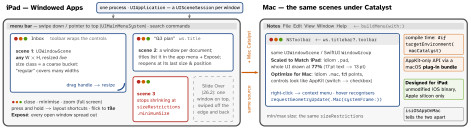

ios-platform · folio
In one line: In iPadOS 26 a scene can be a freely resizable window with Mac-style window
controls, so an iPad app must lay out for any width and height, not a few Split View fractions —
UIRequiresFullScreen is deprecated. Mac Catalyst recompiles the same UIKit
scenes into a Mac app (title bar, NSToolbar, menu bar); Designed for iPad runs the iOS
binary as is.
Download PDF Print view LaTeX source


IPadOS 26
- Modes (Settings › Multitasking & Gestures): Full Screen Apps · Windowed Apps · Stage Manager (stages, external display). The fixed Split View widths are gone: the system resizes your scene continuously and remembers the size.
- Clear the controls:
preferredWindowingControlStyle(for:)→.automatic/.minimal/.unified; bars uselayoutGuide(for: .margins(cornerAdaptation: .horizontal))(26). - Size limits:
windowScene.sizeRestrictions(minimumSize,maximumSize,allowsFullScreen) isnilwhere the system cannot resize — the write silently no-ops. SwiftUI:.windowResizability(.contentMinSize),.defaultSize(17). - Live resize:
windowScene(_:didUpdateEffectiveGeometry:)(26) +effectiveGeometry.isInteractivelyResizing: defer costly work to the drag’s end. SwiftUI.onInteractiveResizeChange(26). UIRequiresFullScreen(deprecated 26): in a window the app is scaled, not resized; with the iOS 27 SDK it is resized discretely when the drag ends (TN3192). UsesizeRestrictions+prefersInterfaceOrientationLocked;UIRequiresFullScreenIgnoredStartingWithVersionfor older OSes.- iOS 26 SDK: no scaling or letterboxing on new screens. TN3187: in the release after iOS 26 an app without the UIScene life cycle won’t launch.
- New window:
activateSceneSession(for:)(17;requestSceneSessionActivationis deprecated). External display:.windowApplicationrole = interactive windows;.windowExternalDisplayNonInteractive= presentation screen.UISplitViewController(26): draggable column widths,.inspectorcolumn.
Example — one scene delegate, iPad and Mac
func scene(_ scene: UIScene, willConnectTo s: UISceneSession,
options: UIScene.ConnectionOptions) {
guard let ws = scene as? UIWindowScene else { return }
ws.sizeRestrictions?.minimumSize = CGSize(width: 500, height: 400)
ws.title = doc.name // window list, Expose, Mac title
#if targetEnvironment(macCatalyst) // titlebar exists only on Mac
ws.titlebar?.toolbar = NSToolbar(identifier: "main")
#endif }
func preferredWindowingControlStyle(for ws: UIWindowScene)
-> UIWindowScene.WindowingControlStyle { .unified } // 26
func windowScene(_ ws: UIWindowScene, // 26
didUpdateEffectiveGeometry old: UIWindowScene.Geometry) {
renderer.paused = ws.effectiveGeometry.isInteractivelyResizing }
UIApplication.shared.activateSceneSession(for: .init( // 17
role: .windowApplication, userActivity: docActivity, options: nil))Mac Catalyst
- Tick the Mac Catalyst destination: the UIKit target is rebuilt for macOS (Intel + AS), each scene a Mac window.
- Mac idiom costs work: fix hard-coded sizes and assets;
UIPageControland some customisations (button titles for non-.normalstates, slider images) throw. Keep one control iPad-style:preferredBehavioralStyle = .pad. - Chrome:
windowScene.titlebar(UITitlebar, Catalyst-only):toolbar,toolbarStyle,titleVisibility,representedURL. - AppKit-only API (status item): a macOS bundle inside the app,
Bundle(url:)?.load(), its principal class behind an@objcprotocol — a technique, not an API.
Which way onto the Mac? (AS = Apple silicon)
| route | build | Macs | looks · cost |
|---|---|---|---|
| Designed for iPad | none: iOS binary; opt out in App Store Connect | AS only | iPad UI (iPhone: fixed) · 0 |
| Catalyst, scaled | recompile, same target | Intel + AS | iPad at 77% · low |
| Catalyst, Mac idiom | + fix sizes, assets | Intel + AS | Mac controls · medium |
| SwiftUI multiplatform | macOS target, #if os(macOS) | all | native · medium |
| AppKit | separate UI code | all | native · high |
Traps
- “Size classes are enough” — a regular window can be almost any width: lay out from bounds, set a minimum.
- Layout on
userInterfaceIdiom==.pad: wrong in a narrow iPad window and under the Mac idiom. UIRequiresFullScreenas the fix: deprecated, scaled in windows, discrete with SDK 27.isMacCatalystAppistruefor Designed-for-iPad apps too — useisiOSAppOnMac.titlebarwithout#if targetEnvironment(macCatalyst)— the iOS build fails.